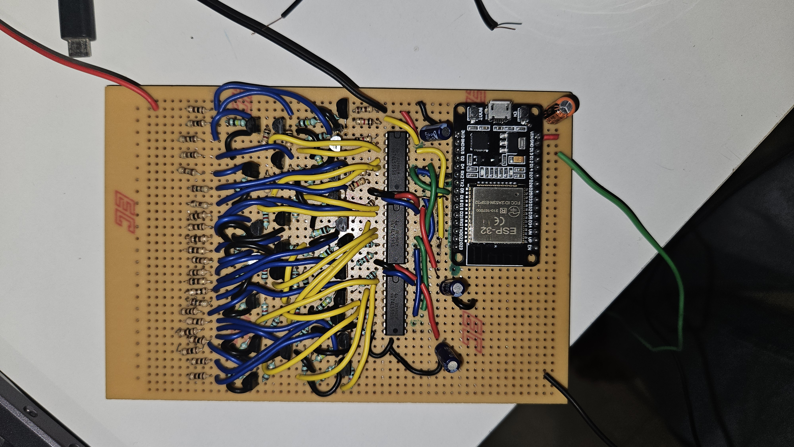
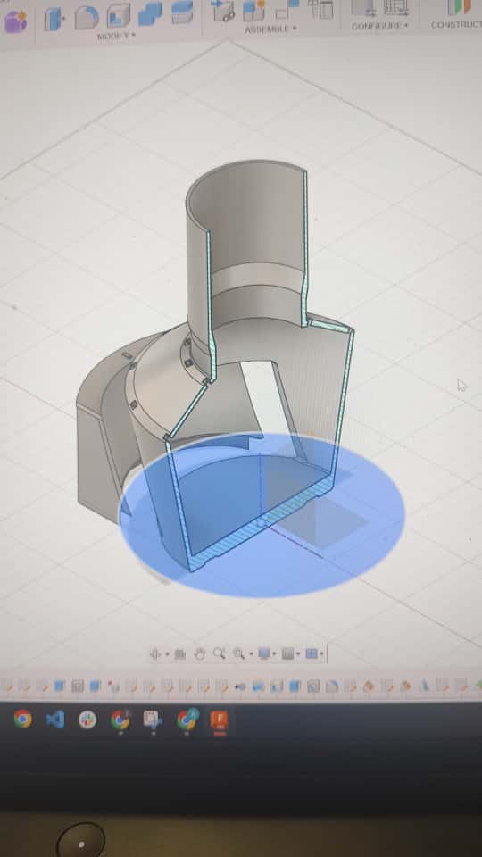
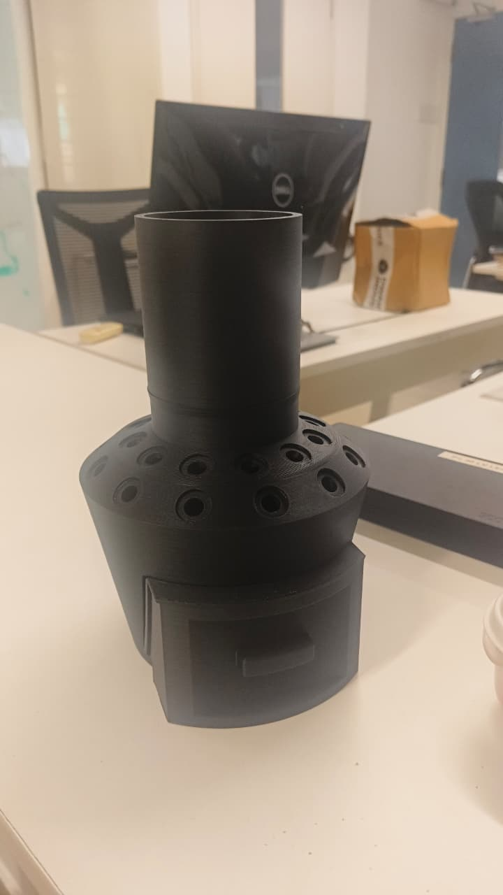
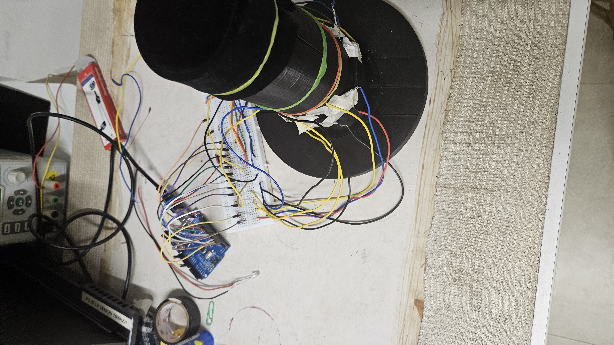

Photometric Stereo Device (Indic Vision)
Overview
At Indic Vision, I built a compact near-field photometric stereo device to recover fine surface detail as a normal map, and then integrate normals into a height/depth map for 3D reconstruction.
The system captures a stack of images from a fixed Canon DSLR viewpoint while switching illumination across a 12-LED ring; varying intensity under different light directions lets the pipeline estimate surface orientation per pixel and reconstruct shape.
Key Contributions
- Designed and assembled the capture rig: Canon DSLR + 12-LED ring illumination for repeatable multi-light imaging.
- Built a reliable capture workflow: automated DSLR shooting from a laptop using PyAutoGUI so entire image stacks could be acquired consistently without manual clicking.
- Implemented lighting control: started with Arduino for LED sequencing and migrated to ESP32 later for a more flexible/faster iteration loop.
- Developed the reconstruction pipeline: preprocessing + photometric stereo normal estimation + normal integration to produce depth/height maps.
- Focused on real-world robustness: handled practical issues like exposure consistency, alignment drift, shadows/specular highlights, and noisy gradients that break depth integration.
Technologies Used
- Python (pipeline + automation tooling)
- OpenCV (image alignment, masking, denoising/preprocessing)
- PyAutoGUI (automated DSLR capture via laptop control)
- Arduino → ESP32 (12-LED ring sequencing/control)
- Photometric stereo + near-field lighting considerations (point/near lights violate the distant/parallel-light assumption used in basic PS)
- Normal integration for depth/height (integrability-enforcing approaches such as Frankot–Chellappa are commonly used)
Gallery / Demo






Challenges & Learnings
The main challenge was near-field behavior: since the LED ring is close to the object, lighting is better modeled as point/near lights (direction and falloff vary across the surface), which breaks the simple “one constant light direction per image” assumption of classical photometric stereo.
On the depth side, integrating normals is sensitive to noise and non-integrable gradients; enforcing integrability (often done with methods like Frankot–Chellappa) helps turn noisy normal-derived gradients into a consistent surface.
This project taught me how to build an end-to-end CV system where hardware repeatability, capture automation, and calibration matter as much as the math.
Source Code
Source code is private (internal repository / project confidentiality).